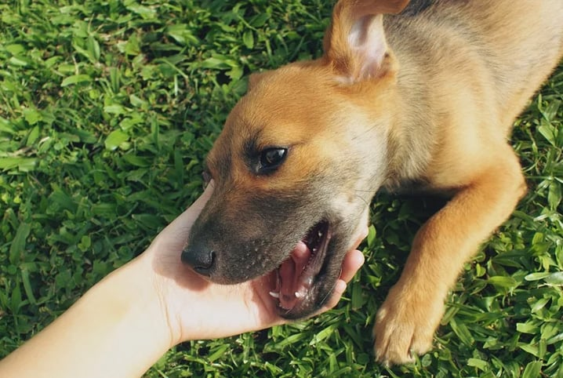

O Site do Cão nasceu com o propósito de ajudar animais a encontrarem um lar cheio de amor e cuidado. Somos apaixonados por cães e acreditamos que todo animal merece uma segunda chance.
Nosso projeto conecta pessoas que desejam adotar com animais que precisam de um novo lar, além de incentivar a conscientização sobre o abandono e os cuidados necessários com os pets.
Também apoiamos ações de resgate, doações e divulgação de animais disponíveis para adoção, trabalhando para construir um mundo melhor para os nossos amigos de quatro patas.
Se você ama animais assim como nós, junte-se a essa causa! 🐈🐶❤️
Nossa sede é o coração do Site do Cão. É aqui que cuidamos, protegemos e damos amor aos animais resgatados, preparando cada um deles para encontrar um novo lar.
Contamos com um espaço organizado, limpo e seguro, onde nossos animais recebem alimentação adequada, cuidados veterinários e muito carinho diariamente.
📍 Endereço: Rua Exemplo, 123 - São Paulo, SP
🕒 Horário de visita: Segunda a Sábado, das 09h às 17h